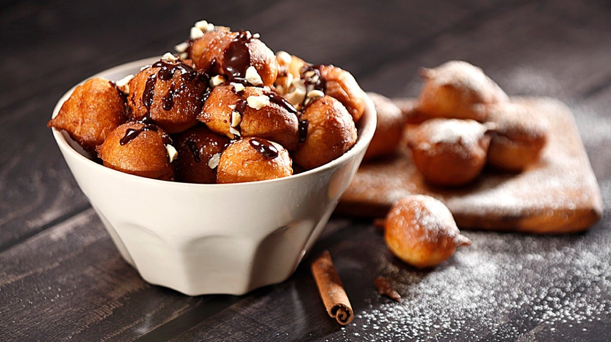

FRITULE

INGREDIENTS
- 2 cups of all-purpose flour
- 2 teaspoons of baking powder
- 1/4 teaspoon of salt
- 2 tablespoons of sugar
- 1 tablespoon of vanilla sugar
- 1/4 cup of raisins
- 1/4 cup of brandy
- 2 eggs
- 1 cup of milk
- 1/2 cup of sparkling water
- Zest of 1 lemon
- Vegetable oil for frying
- Powdered sugar for dusting
INSTRUCTIONS
- In a large bowl, mix together the flour, baking powder, salt, sugar, and vanilla sugar.
- Soak the raisins in the brandy for about 15 minutes.
- Add the eggs, milk, and sparkling water to the dry ingredients and mix well.
- Add the soaked raisins and brandy, along with the lemon zest, and mix until everything is well combined.
- Heat the vegetable oil in a deep frying pan or pot over medium-high heat.
- Using a small cookie scoop or tablespoon, drop spoonfuls of the batter into the hot oil.
- Fry the fritule until they are golden brown on all sides, flipping them occasionally to ensure even cooking.
- Remove the fritule from the oil using a slotted spoon and transfer them to a paper towel-lined plate
to drain excess oil.
- Dust the fritule with powdered sugar while they are still warm.
- Serve the fritule warm, with additional powdered sugar if desired.